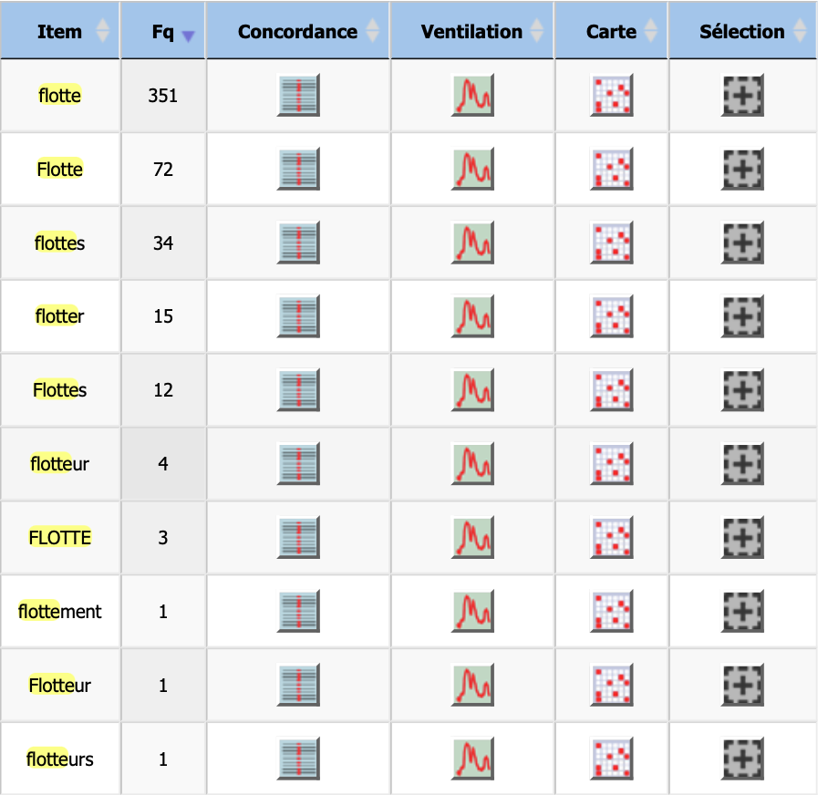
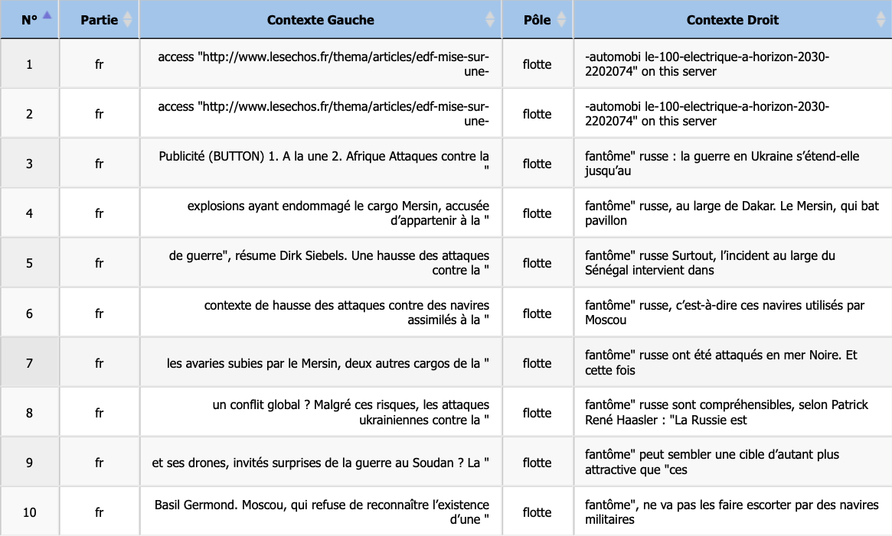

Analyse : Français (Flotte)
Étude morphologique et contextuelle.
Contrairement au norvégien où les variations morphologiques concernaient principalement la définitude du nom (défini/indéfini), l'analyse des variations du mot flotte dans le corpus français, via iTrameur, révèle une problématique de catégorisation grammaticale (Part of Speech).

Répartition des formes et variations graphiques.
Le tableau de fréquences met d'abord en évidence la prédominance absolue de la forme nominale singulière flotte (351 occurrences), renforcée par sa variante avec majuscule Flotte (72 occurrences). Cette dernière suggère une forte présence d'entités nommées ou institutionnelles (titres, noms d'armées) qu'il conviendra de vérifier dans le concordancier.
Cependant, une divergence majeure avec l'analyse scandinave apparaît avec la forme flotter (15 occurrences). Alors que la terminaison en -er marque le pluriel indéfini en norvégien (flåter), elle marque ici l'infinitif verbal. Cette homophonie partielle constitue un piège pour l'analyse automatique : ces occurrences renvoient à l'action de "rester à la surface" et non au substantif collectif "groupe de navires". Elles devront donc être traitées séparément pour ne pas fausser l'étude sémantique du nom.
Enfin, là où le norvégien privilégiait la composition nominale (redningsflåte) pour créer du sens technique, le français opère ici par dérivation suffixale. Le tableau signale la présence de termes comme flotteur (4 occurrences) ou flottement (1 occurrence). Ces lemmes, bien que partageant la même racine étymologique, désignent des référents distincts (objet technique pour l'un, abstraction psychologique ou physique pour l'autre) qui s'éloignent du sens central de "marine" ou de "parc de véhicules".
Analyse en contexte du mot “flotte”

L'analyse contextuelle du substantif flotte à travers le concordancier (KWIC) révèle une orientation discursive radicalement différente de celle observée dans le corpus norvégien. Loin de la matérialité technique du "radeau", les occurrences françaises de cet échantillon se polarisent autour de deux axes majeurs : la géopolitique maritime et la stratégie industrielle.
Une écrasante majorité des lignes (3 à 10) illustre l'usage militaro-stratégique du terme. Cependant, il ne s'agit pas ici de la marine conventionnelle, mais d'une cooccurrence figée spécifique à l'actualité récente : la "flotte fantôme".
Dans ce cluster sémantique, le mot pivot est systématiquement associé à la Russie ("fantôme russe", lignes 3, 5, 6, 8) et s'inscrit dans un champ lexical conflictuel ("guerre en Ukraine", "attaques", "explosions", "drones"). Le terme désigne ici un ensemble de navires opérant dans la clandestinité pour contourner des sanctions, démontrant la capacité du mot à désigner des entités organisationnelles floues ou non-étatiques, au-delà de la marine officielle.
Parallèlement, les premières lignes du concordancier (1 et 2) offrent, via les métadonnées d'URL, une trace tangible du glissement sémantique du mot vers le domaine terrestre et managérial. La mention "automobile-100-electrique" renvoie à la gestion de parcs de véhicules d'entreprise (gestion de flotte / fleet management).
Ainsi, alors que le contexte norvégien ancrait le mot dans la survie physique (le radeau que l'on manipule), le contexte français présenté ici projette le mot flotte vers une abstraction organisationnelle, qu'il s'agisse de gérer des actifs automobiles ou de mobiliser des navires dans un conflit hybride.